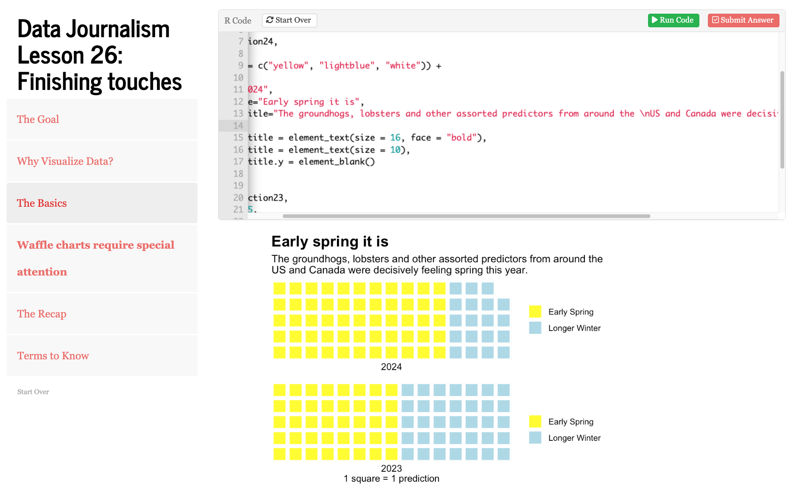
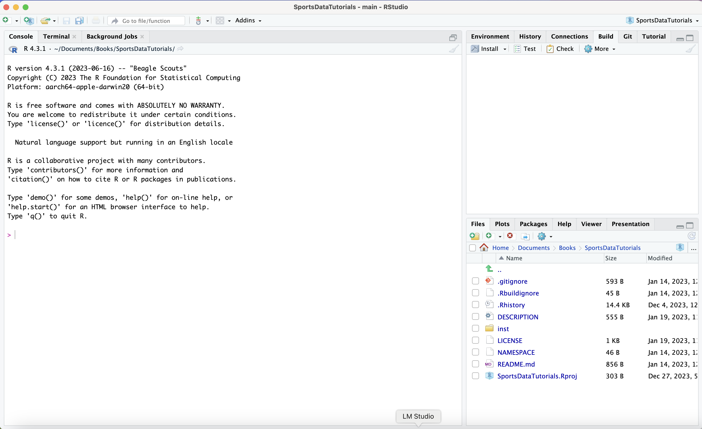

Master the Art of Data Journalism
A comprehensive, interactive guide to finding and telling impactful stories with R, ggplot2, and Datawrapper. Built for journalism students and educators. Free and open source.

Code to Story: The Curriculum
We don't just teach code — we teach the investigative spirit of journalism through the lens of modern data science.
Master R & ggplot2
Go from zero to producing publication-ready graphics. Learn the grammar of graphics to build visualizations that communicate truth with clarity and impact — using the same tools data journalists use every day.
Data Cleaning & Joining
Real data is messy. Learn to wrangle raw public records into structured, verifiable evidence — joining disparate sources to find hidden connections.
Maps & Datawrapper
From choropleth maps to interactive charts — publish professional data visualizations to the web without writing a line of HTML.

Data-Driven Storytelling
Learn how to find the "why" behind the "what." We focus on the narrative arc of data, helping you translate numbers into compelling, human-centered stories.
What Students Are Saying
Real feedback from anonymous course evaluations in JOUR 307 at the University of Nebraska-Lincoln.
The Experience
"the r studio tutorials are epic, they are easy to follow and as someone who doesn't really code or do anything like that, i felt like a genius"
JOUR 307 Student, Spring 2025
"Going from class example, to tutorial, to notebook assignment helped a lot just because of the repetition"
JOUR 307 Student, Fall 2025
"The tutorials are perfect. I really feel like they are built to be a helping tool for students. And a bonus is that I can come back to them any day and review how things are done"
JOUR 307 Student, Spring 2024
The Impact
"The tutorial book that goes along with this course is amazing! The tutorials are easy to follow, and I have learned so much from them"
JOUR 307 Student, Spring 2025
"His tutorials were also super funny, and I can't imagine how much work he put into creating those"
JOUR 307 Student, Spring 2024
Meet Matt Waite
Matt Waite is a Professor of Practice in Journalism and Mass Communications at the University of Nebraska-Lincoln. A journalist by trade, he has spent his career at the intersection of code and accountability reporting.
Before entering academia, Matt was a programmer/journalist for the St. Petersburg Times and the principal developer of PolitiFact, which won the Pulitzer Prize for National Reporting in 2009 — the first time a website was honored with journalism's highest prize.
He is also the founder of the Drone Journalism Lab at UNL, exploring how emerging technologies can be used responsibly to tell better stories, and the author of Paving Paradise: Florida's Vanishing Wetlands and the Failure of No Net Loss.
Pulitzer Prize Winner
Awarded for PolitiFact — the first website to win journalism's highest honor.
Ready to become a news nerd?
Everything is free and open source. No account needed. Just install R and start learning.